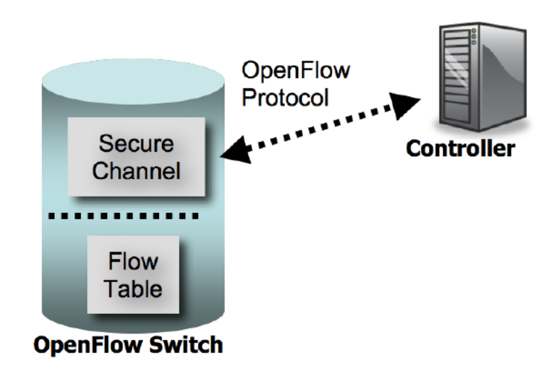
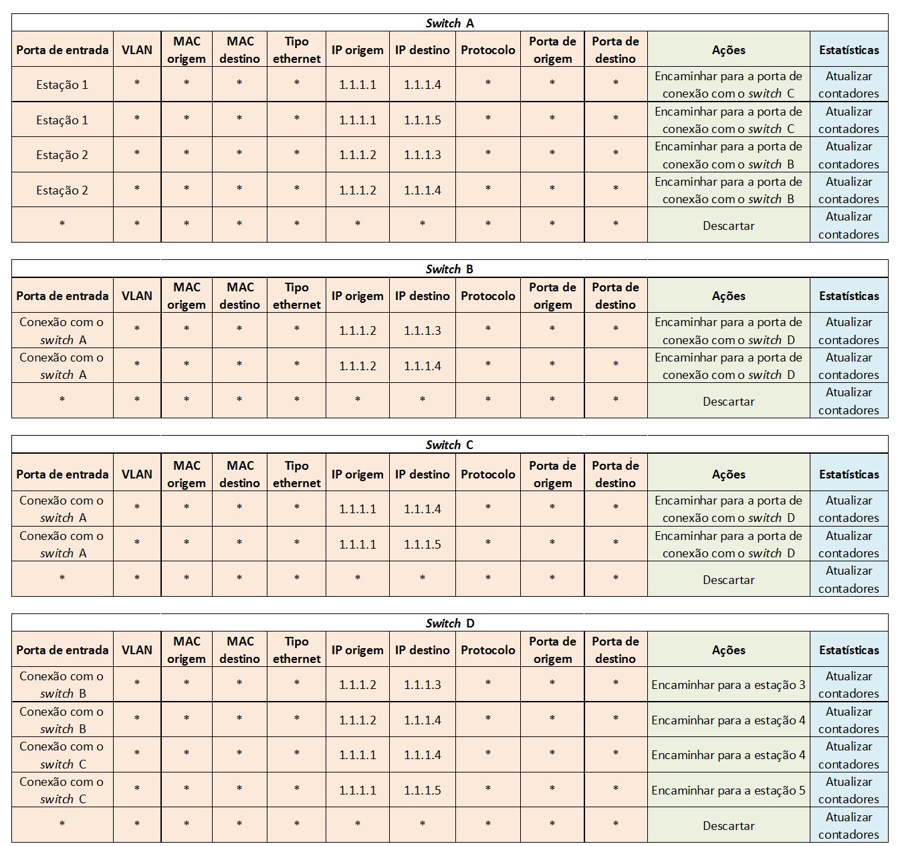

Arquitetura e Funcionamento do OpenFlow
Arquitetura de uma Rede OpenFlow
Uma rede baseada em OpenFlow é composta por três elementos principais:
- Controlador OpenFlow: Representa o plano de controle centralizado, comumente tratado como o “cérebro” da rede. Implementado em software sobre servidores dedicados ou em clusters distribuídos (ex.: ONOS, OpenDaylight, Ryu), comunica-se com os switches pela interface sul (Southbound Interface) e é responsável por gerenciar a topologia global da rede, calcular rotas, definir políticas de segurança, fazer engenharia de tráfego e coordenar o comportamento de todos os switches. Para construir essa visão global da infraestrutura, o controlador utiliza mecanismos de descoberta de topologia, como o protocolo LLDP (Link Layer Discovery Protocol), por meio do qual identifica os enlaces existentes entre os dispositivos e mantém uma representação atualizada da rede.
- Switches OpenFlow: Constituem o plano de dados ou plano de encaminhamento da infraestrutura. Podem ser implementados em hardware dedicado (com ASICs) ou em software, como o Open vSwitch. Diferente dos switches tradicionais — que embutem protocolos de roteamento e comutação autônoma —, os switches OpenFlow não tomam decisões de roteamento: seu papel é executar em alta velocidade as regras definidas pelo controlador.
- Canal Seguro (Secure Channel): Interface de comunicação que liga cada switch ao controlador, estabelecida sobre TCP e que pode ser protegida com TLS (Transport Layer Security). O uso de TLS é previsto pela especificação, mas é opcional, e na prática muitas redes usam TCP sem criptografia (ver Seção 6.2). É por esse canal que trafegam as mensagens de gerência, os eventos assíncronos e as instruções de fluxo.

Tabelas de Fluxo e Regras de Encaminhamento
O comportamento de um switch OpenFlow é definido pelas suas tabelas de fluxo (Flow Tables), que, para o tráfego controlado via OpenFlow, ocupam o lugar das tabelas de roteamento e do aprendizado de endereços MAC usados nos switches tradicionais. O processamento baseia-se no paradigma match-action (correspondência e ação), no qual cada pacote recebido é comparado com regras previamente definidas nas tabelas de fluxo. Quando há correspondência entre os campos do pacote e uma regra, o switch executa as ações associadas a ela (McKeown et al., 2008).
Cada entrada de fluxo (Flow Entry) é uma regra composta por diferentes campos que definem os critérios de correspondência dos pacotes e as ações associadas ao seu processamento:
- Campos de Correspondência (Match Fields): definem os critérios utilizados para selecionar os pacotes aos quais a regra será aplicada. Esses campos podem considerar informações de diferentes camadas da rede, como porta de entrada do switch, endereços MAC de origem e destino, identificador de VLAN, endereços IP e portas dos protocolos TCP/UDP.
- Instruções (Instructions): definem o que acontece com o pacote quando há correspondência. É por meio delas que são aplicadas as ações (Actions) — como encaminhar para uma porta específica, enviar ao controlador, alterar campos do cabeçalho ou descartar o pacote — e que o pacote pode seguir para outra tabela do pipeline. Na versão 1.0 do protocolo, as ações eram associadas diretamente à entrada de fluxo; a partir da versão 1.1, passaram a ficar dentro das instruções.
- Contadores (Counters): armazenam estatísticas atualizadas pelo switch para monitorar o comportamento do tráfego. Podem registrar métricas como a quantidade de pacotes processados, o número de bytes transmitidos e o tempo de atividade da entrada.
- Prioridade (Priority): determina a precedência entre regras que podem corresponder ao mesmo pacote. Quando múltiplas entradas são aplicáveis a um mesmo pacote, a regra com maior prioridade é selecionada.
- Temporizadores (Timeouts): controlam o tempo de permanência das entradas na tabela de fluxo. O idle timeout remove regras que permanecem sem tráfego por determinado período, enquanto o hard timeout define uma duração máxima para a existência da regra, independentemente de sua utilização.
- Cookie: identificador definido pelo controlador para facilitar o gerenciamento das entradas de fluxo. Esse campo não interfere no encaminhamento dos pacotes, sendo utilizado apenas para identificar e manipular regras específicas.
- Flags: indicam comportamentos especiais associados à entrada de fluxo, como a geração de notificações ao controlador quando uma regra é removida.

Pipeline de Múltiplas Tabelas, Modos de Operação e Otimização em Hardware (TCAM)
Em redes de maior escala, uma única tabela de fluxo pode não ser suficiente para representar todas as políticas de encaminhamento necessárias. Por isso, o OpenFlow permite o uso de múltiplas tabelas organizadas em um pipeline de processamento. Um pacote pode ser processado sequencialmente através de diferentes tabelas utilizando a instrução Goto Table, permitindo a divisão modular de políticas complexas de rede — separando, por exemplo, o tratamento de Listas de Controle de Acesso (ACLs), roteamento IP e tradução de endereços de rede (NAT) em etapas distintas de processamento.
A instalação das regras de fluxo nessas tabelas pode ocorrer por meio de dois modos principais de operação (Kurose & Ross, 2020):
- Modo reativo: as regras são inseridas pelo controlador apenas quando uma nova situação é identificada na rede. Quando um pacote não encontra uma regra correspondente (table-miss) e a tabela está configurada para enviar esses pacotes ao controlador, o switch envia uma mensagem
PACKET_IN, que analisa o pacote e pode responder com uma mensagemFLOW_MODpara instalar uma nova entrada de fluxo. - Modo proativo: o controlador instala previamente regras de fluxo nos switches, com base no conhecimento da topologia e das políticas da rede. Essa abordagem reduz a latência associada ao primeiro pacote de um fluxo, pois o switch já possui instruções de encaminhamento antes da chegada do tráfego.
Para permitir que os switches OpenFlow processem grandes volumes de tráfego com baixa latência, os equipamentos utilizam estruturas de memória especializadas de alta velocidade, como as TCAMs (Ternary Content-Addressable Memory). Diferentemente das memórias convencionais, as TCAMs realizam comparações paralelas entre os campos dos pacotes recebidos e os campos de correspondência das regras de fluxo, permitindo buscas eficientes com o uso de máscaras (wildcards) e agilizando a identificação das entradas aplicáveis.
Comunicação entre Controlador e Switch (Taxonomia de Mensagens)
A comunicação entre o controlador e os switches é feita por um conjunto padronizado de mensagens do protocolo OpenFlow, organizadas em três categorias:
1. Controlador para Switch (Controller-to-Switch)
São mensagens iniciadas pelo controlador para consultar o estado do switch ou modificar seu comportamento:
FEATURES_REQUEST/FEATURES_REPLY: Utilizadas no momento do estabelecimento da sessão para que o controlador descubra as capacidades estruturais, restrições de portas e características de hardware suportadas pelo switch.FLOW_MOD: A mensagem mais importante do protocolo, utilizada para adicionar, modificar ou apagar dinamicamente entradas nas tabelas de fluxo do switch.PACKET_OUT: Permite que o controlador envie um pacote ao switch para que ele seja processado e encaminhado por uma porta específica. Esse pacote pode ser criado pelo próprio controlador ou pode corresponder a um pacote previamente recebido pelo switch e enviado ao controlador para análise.
2. Mensagens Assíncronas (Asynchronous)
São enviadas pelo switch, sem solicitação do controlador, para notificar o controlador sobre eventos relevantes ocorridos na rede:
PACKET_IN: Enviado quando um pacote deve ser analisado pelo controlador — tipicamente quando não encontra nenhuma regra correspondente (table-miss) e a regra de table-miss manda enviá-lo ao controlador, ou quando uma regra tem explicitamente a ação de enviar ao controlador. No OpenFlow 1.0 esse era o comportamento padrão do table-miss; a partir da versão 1.3, na ausência de uma regra de table-miss, o pacote é descartado.FLOW_REMOVED: Notifica o controlador quando uma entrada de fluxo expira devido aos temporizadores ou é eliminada por estouro de capacidade.PORT_STATUS: Informa imediatamente o controlador sobre alterações físicas ou administrativas no estado das portas (ex.: queda ou subida de link).
3. Mensagens Simétricas (Symmetric)
Podem ser iniciadas por qualquer um dos lados, sem solicitação prévia. Incluem a mensagem de início de sessão (HELLO), mensagens de extensões de fabricantes (EXPERIMENTER) e os testes de que a conexão entre controlador e switch continua ativa (ECHO_REQUEST / ECHO_REPLY).
Processamento e Encaminhamento de Pacotes
O caminho de um pacote ao atravessar uma rede baseada em OpenFlow segue esta sequência:
- Recepção do Pacote: Um pacote de dados ingressa fisicamente em uma das portas de um switch OpenFlow vindo da rede conectada.
- Consulta à Tabela de Fluxo: O switch consulta suas tabelas de fluxo (em hardware, normalmente armazenadas em memória TCAM) para verificar se os campos do pacote correspondem a alguma regra válida.
- Avaliação de Correspondência (Match Hit vs. Table-Miss):
- Match Hit: O pacote encontra uma entrada válida na tabela de fluxo. Nesse caso, o switch executa localmente as ações associadas à regra, sem necessidade de comunicação com o controlador. Essa capacidade permite que os switches encaminhem grandes volumes de tráfego em alta velocidade (line-rate) de forma autônoma.
- Table-Miss: O pacote não possui regra correspondente. Se a regra de table-miss assim determinar, o switch envia o pacote (ou parte dele) ao controlador em uma mensagem
PACKET_INpelo canal seguro; caso contrário, o pacote é descartado.
- Tomada de Decisão e Instalação Reativa: O controlador recebe o
PACKET_IN, analisa o fluxo com base na topologia global e executa duas ações fundamentais: envia uma mensagemFLOW_MODpara instalar a nova regra no switch, de modo que os próximos pacotes do mesmo fluxo sejam tratados diretamente por ele, e envia uma mensagemPACKET_OUTpara injetar o pacote original de volta no fluxo de encaminhamento pela porta correta de saída (McKeown et al., 2008).